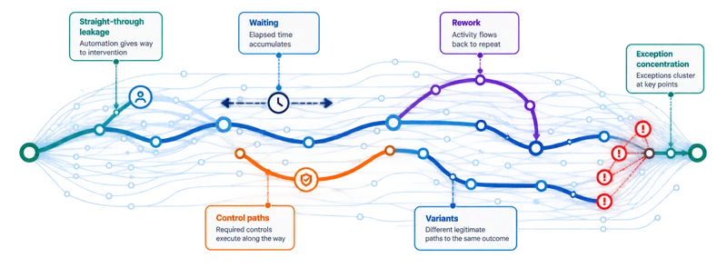

Where do delays originate?
Identify the preceding steps and handoffs associated with late or exception-prone cases.
ETF operations
ETF creation and redemption activities can involve issuers, authorized participants, custodians, administrators and multiple technology environments. Execution Intelligence helps investigate where work waits, repeats or diverges.

Illustrative workflow
A representative operational sequence; actual responsibilities and systems vary by fund structure, participants and operating model.
Execution questions
The opportunity is to understand the operating process, not to execute trades or replace ETF infrastructure.
Identify the preceding steps and handoffs associated with late or exception-prone cases.
Distinguish normal operating variation from recurring rework and control loops.
Reconstruct a case across linked records and teams where reliable identifiers exist.
Compare execution patterns before and after process or technology changes.
ETF operations are a proposed application of RE-ViVE’s process-agnostic execution mapping. This page does not imply an existing ETF customer deployment.
Explore the platform →